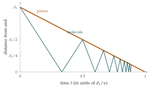

STEP I 2002, Question 10
Read the question before you go on. It is in the STEP Support Programme’s question database: step.maths.org/questions/02-s1-q10
The hook
Pump up a bicycle tyre and feel the pump: it gets hot. Squeezing a gas warms it, and this is the principle behind diesel engines (which ignite their fuel by compression alone), refrigerators and the formation of stars. But why does compression heat a gas? Temperature is the average kinetic energy of the molecules, so the question is: why do the molecules speed up?
This question answers it with a single molecule. Each time it bounces off the advancing piston, it picks up a little extra speed, just as a tennis ball does off a moving racket. Following the bounces exactly reveals a hidden law: the molecule’s speed times the length of the cylinder stays almost constant. That is an adiabatic invariant, and it is the microscopic origin of the gas laws you meet in physics.
Before you start
A ball moving at speed \(w\) hits a wall that is moving towards it at speed \(u\), and bounces elastically. What is its speed afterwards? (Think in the wall’s frame.)
In the wall’s frame, the ball approaches at \(w + u\) and, bouncing elastically off a very heavy object, leaves at \(w + u\). Back in the ground frame, the wall is moving at \(u\) in the same direction as the rebounding ball, so the ball’s speed is \(w + 2u\). Each bounce off the advancing piston adds \(2u\). (Bouncing off the stationary end of the cylinder changes nothing.)
Working it through
Stage 1 The speed after \(n\) bounces
The particle starts at speed \(v\). Each collision with the piston adds \(2u\), and collisions with the end do not change the speed. So after \(n\) collisions with the piston, \[v_n = v + 2nu. \qed\]
Stage 2 A recurrence for the length
Between the \(n\)th and \((n+1)\)th collisions, the particle goes from the piston to the end and back. How far does it travel? How far does the piston move?
In time \(t_n\) the piston moves \(ut_n\), so \(d_n - d_{n+1} = ut_n\). Meanwhile the particle, at speed \(v_n\), travels from the piston to the end (distance \(d_n\)) and back to the piston (distance \(d_{n+1}\)): so \(d_n + d_{n+1} = v_nt_n\). Dividing one equation by the other eliminates \(t_n\): \[\frac{d_n + d_{n+1}}{d_n - d_{n+1}} = \frac{v_n}{u}, \qquad\text{so}\qquad d_{n+1}(v_n + u) = d_n(v_n - u).\] With \(v_n = v + 2nu\), \[d_{n+1} = \frac{v + (2n - 1)u}{v + (2n + 1)u}\,d_n. \qed\]
Stage 3 Telescoping
Write \(d_n\) as \(d_1\) times a product of \(n - 1\) such fractions. What cancels?
\[d_n = d_1 \cdot \frac{v + u}{v + 3u}\cdot\frac{v + 3u}{v + 5u}\cdots\frac{v + (2n - 3)u}{v + (2n - 1)u} = \frac{v + u}{v + (2n - 1)u}\,d_1. \qed\] Each numerator cancels the previous denominator, leaving only the first numerator and the last denominator.
Stage 4 The case \(v = u\)
Then \(d_n = \frac{2u}{2nu}d_1 = \frac{d_1}{n}\), and \[ut_n = d_n - d_{n+1} = d_1\Bigl(\frac1n - \frac{1}{n + 1}\Bigr) = \frac{d_1}{n(n + 1)}. \qed\] Adding these up, \(u(t_1 + t_2 + \cdots) = d_1\bigl(1 - \frac12 + \frac12 - \frac13 + \cdots\bigr) = d_1\): the piston reaches the end of the cylinder at time \(d_1/u\) after the first collision, as it must. Before it gets there, the particle bounces infinitely often (Figure 10.4.1).

Looking back
Change frame for a collision. In the piston’s frame the bounce is trivial.
Two equations, eliminate the unknown. The distances travelled by the particle and the piston in the same time gave a recurrence without \(t_n\).
Telescoping. The product collapsed, just as the sum of \(\frac{1}{n(n+1)}\) did.
What’s really going on
An adiabatic invariant
Multiply the speed by the length: \[v_n d_n = (v + 2nu)\cdot\frac{v + u}{v + (2n - 1)u}\,d_1 \approx (v + u)d_1\] when \(n\) is large, or when \(u\) is much smaller than \(v\). So \[\text{speed} \times \text{length} \approx \text{constant}.\] If the piston moves slowly compared with the molecule, the product \(vd\) hardly changes, however far the piston moves. Quantities like this, which stay nearly constant when a system is changed slowly, are called adiabatic invariants. In general, the adiabatic invariant of a back-and-forth motion is \(\oint p\,\mathrm{d}q\), the momentum integrated round one cycle; here that is \(mv \times 2d\).
From one molecule to a gas
Since \(v \propto 1/d\), the kinetic energy \(\frac12mv^2\) is proportional to \(1/d^2\). For a gas of many molecules moving along one direction, temperature is proportional to the average kinetic energy, so \(T \propto 1/d^2\): halving the length quadruples the temperature. In three dimensions the energy is shared between three directions of motion, and the same argument (which Feynman gives in his Lectures) leads to the law of adiabatic compression of a monatomic gas, \[TV^{2/3} = \text{constant}, \qquad\text{or equivalently}\qquad pV^{5/3} = \text{constant}.\] The exponent \(\frac53\) is the famous ratio \(\gamma\) of specific heats for a monatomic gas. Compressing air in a bicycle pump to a fifth of its volume would, if done quickly and with no heat escaping, raise its absolute temperature by a factor of \(5^{0.4} \approx 1.9\) (air molecules have two atoms, giving \(\gamma = 1.4\) instead): from \(20^\circ\)C to about \(280^\circ\)C. The pump does not get that hot only because the compression is slow and heat leaks away.
In 1949 Enrico Fermi proposed that cosmic rays, particles arriving from space with enormous energies, are accelerated exactly as the molecule in this question is: by bouncing repeatedly off moving magnetic fields in interstellar gas clouds, gaining a little energy each time. “Fermi acceleration” is now thought to operate at the shock waves of supernova remnants, where particles cross the shock back and forth like a molecule between a piston and a wall. Adiabatic invariants also played a role in the birth of quantum mechanics: Paul Ehrenfest argued in 1916 that the quantities that are quantised must be adiabatic invariants, since a slow change cannot make a system jump between quantum states.
The thinking skill
When a process repeats, describe one cycle exactly and write down how the state changes from one cycle to the next.
Here the state was the pair (speed, length) at each collision. The recurrence could be solved exactly, and its solution revealed an approximately conserved quantity. At university, the same approach (one cycle, then a recurrence or a “return map”) is used for orbits, oscillators and the iterated maps of Section 8.7.
Try this next
The invariant exactly. Show that \(v_nd_n - (v + u)d_1 = \frac{u(v + u)d_1}{v + (2n - 1)u}\), and deduce that \(v_nd_n \to (v + u)d_1\) as \(n \to \infty\).
Pulling the piston out. Repeat the question with the piston withdrawn at speed \(u < v\). Show that the particle slows down, and find \(v_nd_n\). (Expanding gases cool.)
Energy. In the case \(v = u\), the molecule’s speed grows without limit as the piston approaches the end. Find the average force on the piston during the \(n\)th cycle (change of momentum divided by \(t_n\)) and show that it grows like \(n^3\). What does this say about the work needed to push the piston all the way in?
A bouncing ball. A ball bounces elastically on a floor under gravity, and the floor is raised slowly. Guess an adiabatic invariant for this motion. (Hint: the analogue of \(vd\) is the average speed times the height of the bounce, or equivalently the energy times the time between bounces.)
Further reading
Richard Feynman, Robert Leighton & Matthew Sands, The Feynman Lectures on Physics, Vol. I (free online), Chapter 39, “The kinetic theory of gases”. The same piston argument, extended to three dimensions.
Stephen Blundell & Katherine Blundell, Concepts in Thermal Physics (Oxford University Press). Adiabatic processes and kinetic theory at first-year level.
Lev Landau & Evgeny Lifshitz, Mechanics (Butterworth-Heinemann), §49. A concise treatment of adiabatic invariants, for later.